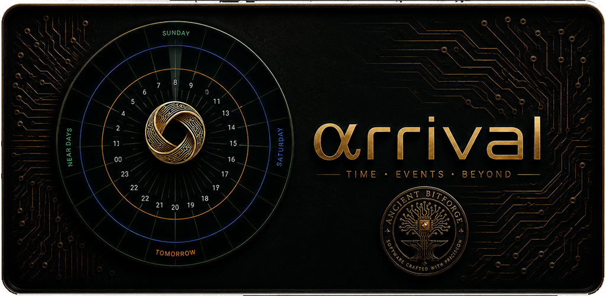
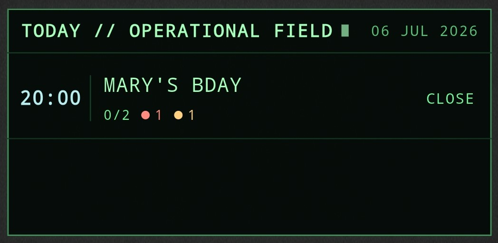
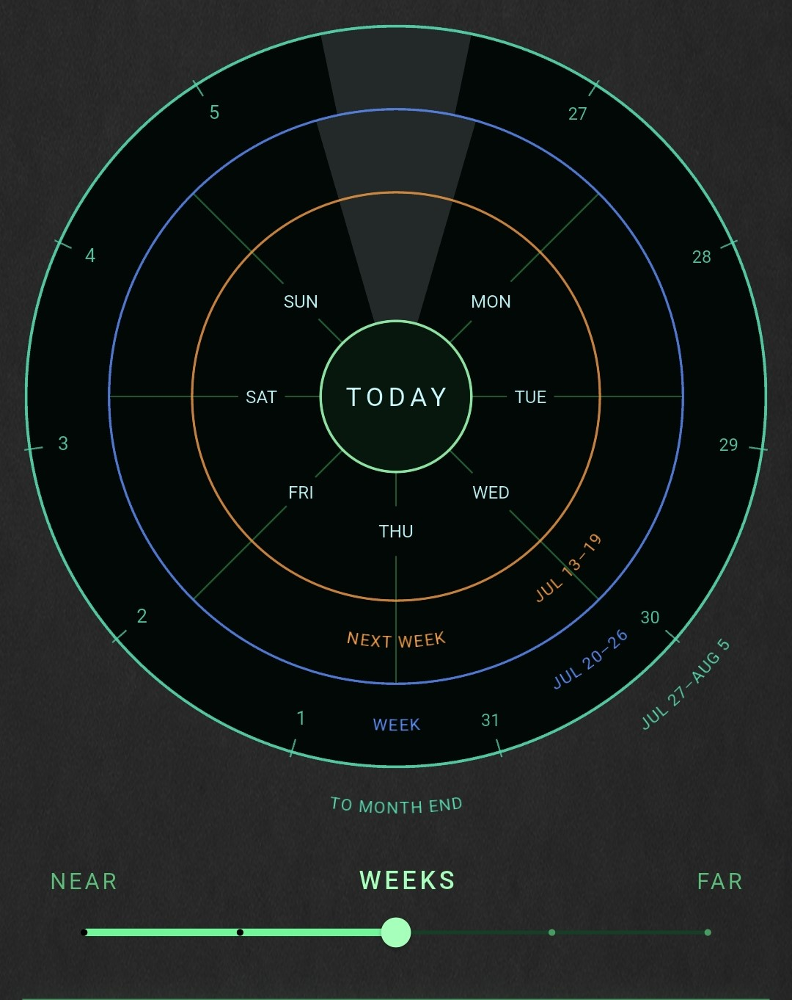
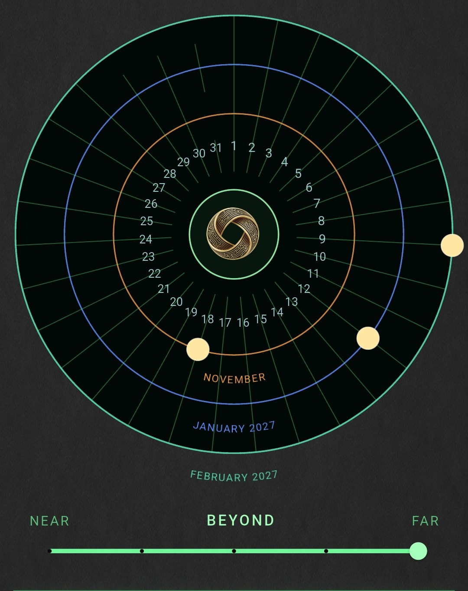
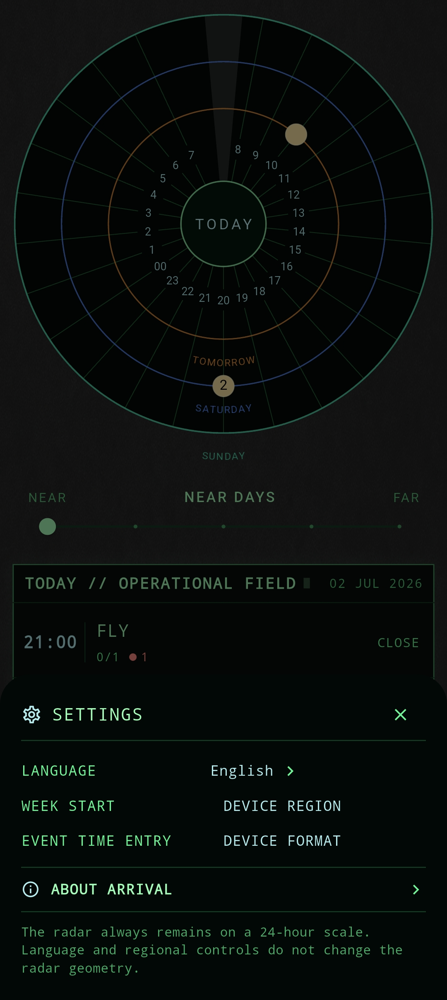

01
Today
Immediate time is organized around the hours of the day, allowing events to be understood in relation to the present moment.
Spatial Time Instrument
Clarity for what lies ahead.

A personal organizer that represents time spatially, allowing commitments to be perceived before they become immediate.
Enter the instrumentPurpose
Conventional calendars reduce time to rows, boxes and notifications.
They record what has been entered, but they do not necessarily help a person understand how events approach, accumulate or relate to one another.
Arrival reorganizes commitments around human spatial perception.
It does not predict what the user wants. It does not judge priorities. It does not replace memory with invisible automation.
Arrival helps the user see what lies ahead while leaving every decision in human hands.
The System
Arrival changes the scale of time without abandoning the same visual language. The user moves from hours to days, weeks, months and beyond.
01
Immediate time is organized around the hours of the day, allowing events to be understood in relation to the present moment.
02
The first temporal distance expands into successive orbital days while maintaining a stable spatial frame.
03
Events are progressively condensed so that density, proximity and distribution remain legible at broader scales.
04
Long-range commitments remain visible without forcing distant time into the same representation used for immediate events.
Interface
Each level of the interface corresponds to a real change in temporal distance. The radar is not decoration; it is the organizing principle of the instrument.









Film
Documentation
Arrival user guides are available in the languages selected for its international release.
User Guides
Privacy
Download the current privacy policy document.
Arrival
The instrument reveals the path ahead.
It does not decide how the journey should be made.